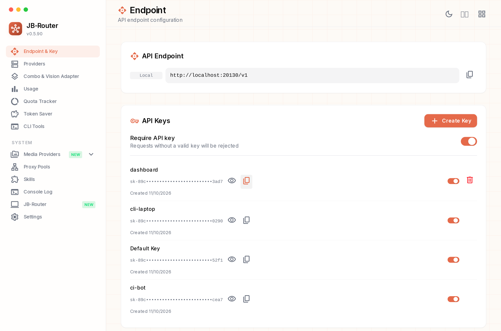
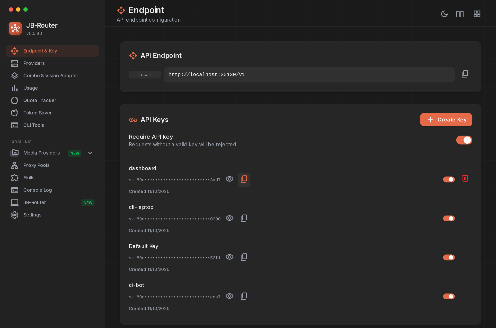
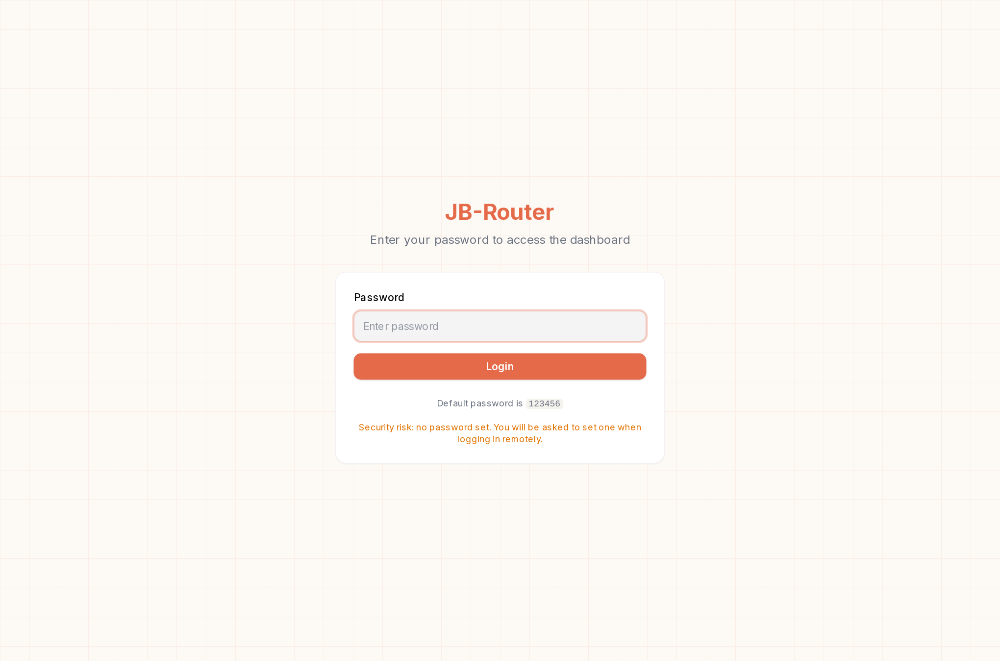
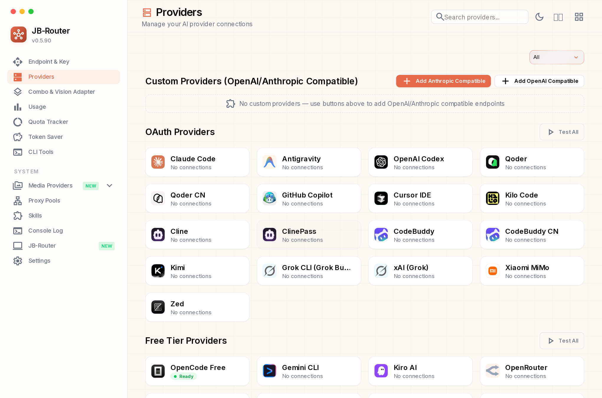
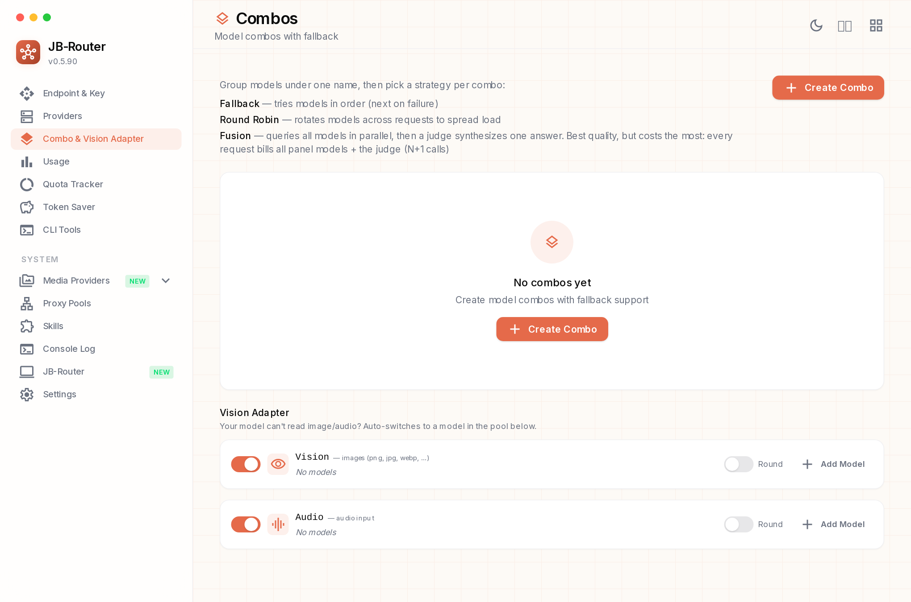
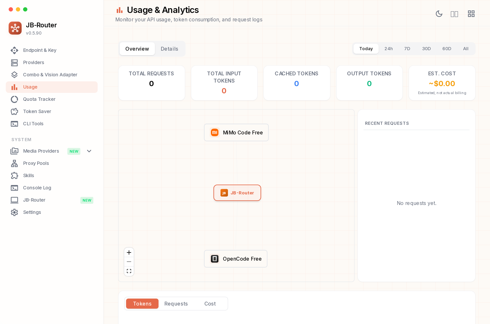
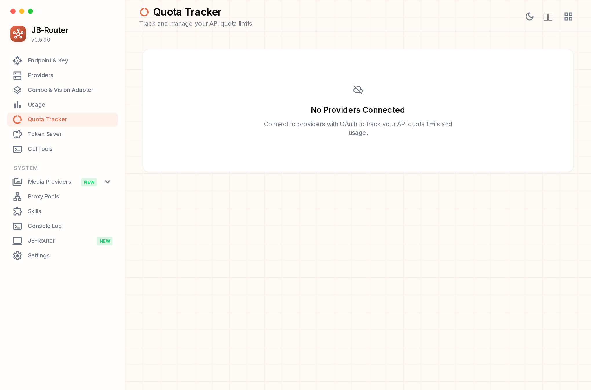
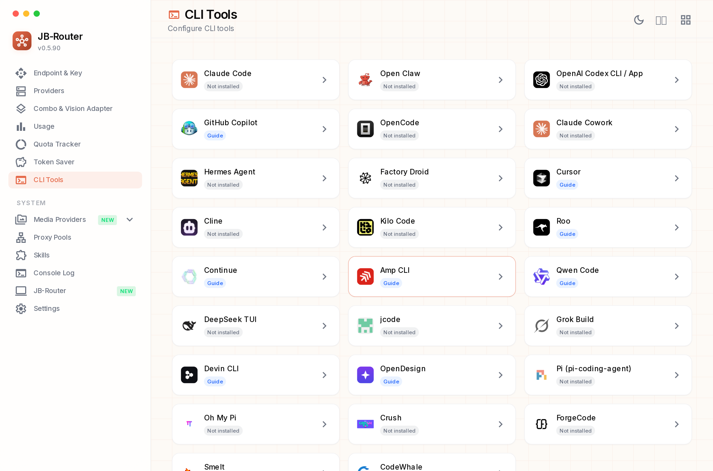
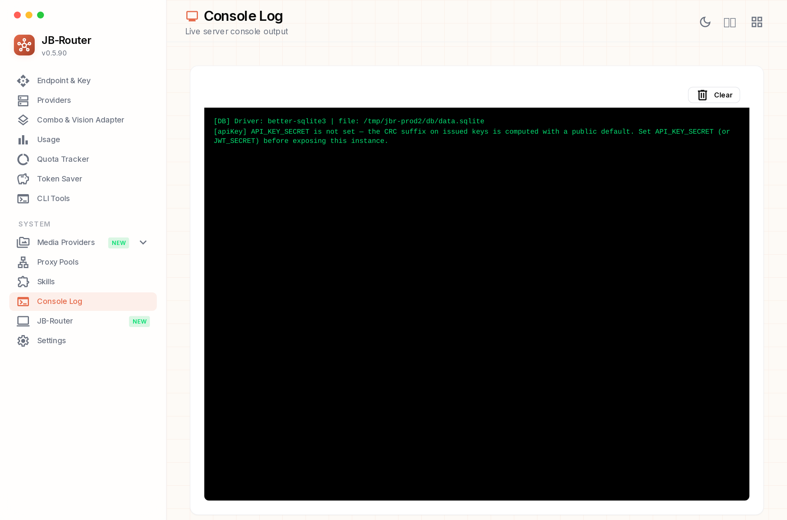

این تصاویر با اجرای واقعی برنامه (نسخهٔ production بیلدشده) و مرورگر Chromium گرفته شدهاند —
یعنی همان چیزی که کاربر روی localhost:20128 میبیند، نه یک ماکاپ دستی.
dashboard، cli-laptop، ci-bot) در آن ثبت شده است.
بنابراین Providers/Usage خالی است؛ چیدمان، رنگها، سایدبار و کارتها اما کاملاً همان UI اصلیاند.








